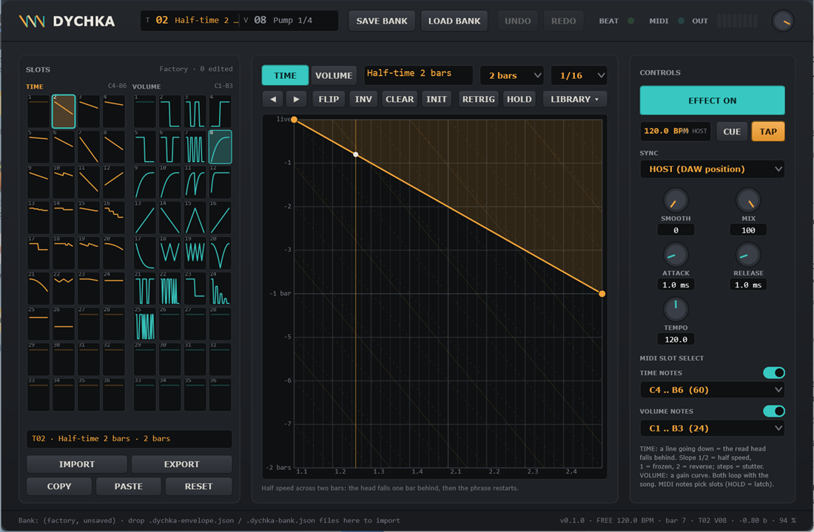
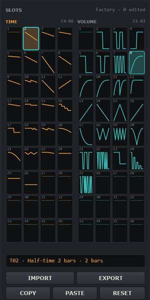
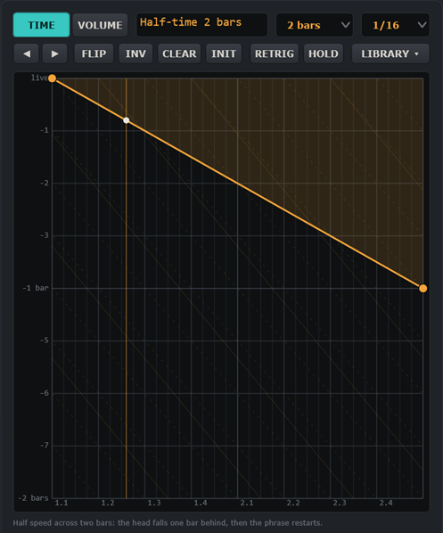
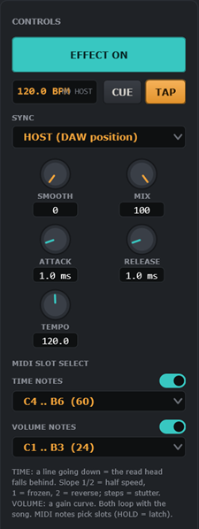

Dychka keeps the last two bars of the incoming audio in a buffer and plays it back through two envelopes that loop with the song position. The TIME envelope says how far behind the live input the read head sits at every moment: a horizontal line is a plain delay, a line going down is a slow-down (the head falls behind), a slope of exactly one beat per beat freezes the sound, a steeper line plays backwards, and a staircase repeats a slice — stutters, half-time, reverse, tape stops and scratches all come from the shape of that one line. The VOLUME envelope is a gain curve: gates, side-chain pumps, fades, tremolos.
There are 36 slots of each kind. You select them by clicking, by DAW automation of the Time Slot / Volume Slot parameters, or by MIDI notes — momentarily while a key is held, or latched. Every slot is editable: click points onto a beat grid, bend the segments, make steps, and the result is heard immediately. 49 factory shapes cover the classics.
Dychka.vst3 (the whole folder) to C:\Program Files\Common Files\VST3\, then rescan plug-ins in your DAW. Dychka is an effect (audio insert with MIDI input): it appears as VST3: Dychka (Dallas Audio) under FX / Delay.Dychka.exe. Use Options → Audio/MIDI settings to pick an audio device with an input and untick Mute audio input. Without a DAW there is no song position, so the envelopes free-run at the TEMPO knob.| Control | What it does |
|---|---|
| T / V display | The selected TIME slot and VOLUME slot with their names; the kind you are editing is shown in amber, * = edited compared with the factory shape. |
| SAVE BANK | Saves all 72 slots to a bank file. The first time it asks for a file (default folder Documents\Dychka Banks, extension .dychka-bank.json); after that it saves to the same file without asking. The DAW project also remembers your edits — a bank file is for sharing and for using the same shapes in several projects. |
| LOAD BANK | Opens a file: a bank replaces the slots it lists; an envelope file goes into the current slot of its kind (see §6). |
| UNDO / REDO | Step back and forward through envelope edits (a drag counts as one step; loads, pastes and resets too). Ctrl+Z, Ctrl+Y / Ctrl+Shift+Z after clicking the window. Knobs are DAW parameters and are undone by the DAW. |
| BEAT | Flashes red on beat 1 and green on the other beats while the effect is on. |
| MIDI | Lights teal when a MIDI note-on arrives. |
| OUT / knob | Eight-segment peak meter and the output level (−60 … +6 dB), applied to everything. |

Every cell shows the slot number and a thumbnail of its envelope. The amber-filled cell is the slot the engine is playing right now (brighter while a MIDI note holds it), the teal frame marks the slot shown in the editor, an amber dot means the slot differs from the factory shape. The caption above each grid shows the MIDI note range that selects its slots.
| Button | What it does |
|---|---|
| IMPORT | Loads an envelope file into the edited slot (or a bank file). You can also drop files onto the window; several envelope files land in consecutive slots. |
| EXPORT | Saves the edited slot as a .dychka-envelope.json file. |
| COPY / PASTE | Copies the envelope to the clipboard as JSON text and pastes it into another slot (also between two Dychka instances, or between a TIME and a VOLUME slot). |
| RESET | Back to the factory shape of that slot (flat for a user slot). |

The horizontal axis is time in beats (labels bar.beat), the length of the loop is set by LENGTH. The vertical axis is how far back the read head sits: live at the top, one bar back in the middle, two bars back at the bottom. The dashed diagonal guides have a slope of one beat per beat — a line along a guide is a frozen read head.
| Shape | Result |
|---|---|
| Horizontal line at live | Nothing happens (slot 1, Off). |
| Horizontal line lower down | A plain delay: everything arrives late by that amount, at normal speed (Delay 1 beat). |
| Line going down at half the guide slope | Half speed: the head falls one beat behind every two beats (Half-time). A quarter of the slope = quarter speed. |
| Line along a guide (slope 1) | Frozen — the head stays on one spot (Freeze offbeat). |
| Line twice as steep as the guides | Reverse at normal speed (Reverse 1 bar). 1.5 × the slope = reverse at half speed. |
| Line going up (towards live) | Faster than live — it has to start lower down, e.g. one bar back, and catch up (Double-time). |
| Staircase of hold steps | Every step jumps back by the step height: the slice between the steps is repeated — a stutter (Stutter 1/16: four steps of a sixteenth). |
| Curve that steepens towards slope 1 | Slows down gradually and stops: a tape stop. |
When the loop wraps, the head jumps back to the value at the start — that is what restarts a half-time phrase every two bars. The info line under the canvas tells you the playback speed under the mouse (speed 0.50x, frozen, reverse 1.00x, step).
The vertical axis is the gain, 100 % at the top, 0 % at the bottom. Hold steps make gates; ramps and curves make pumps, fades and swells. ATTACK and RELEASE (§7) round the edges.
| Control | What it does |
|---|---|
| TIME / VOLUME | Which envelope you are editing (the slot grid follows). |
| Name | Envelope name (Return or click elsewhere to apply). It appears in the grid and the header. |
| LENGTH | Length of the loop: 1 beat, 2 beats, 1 bar, 2 bars or 4 bars. The TIME axis always spans two bars of delay, whatever the length. |
| SNAP | Grid for points: 1/4, 1/8, 1/16, 1/32, the triplets 1/12 and 1/24, or off. |
| ◀ ▶ | Rotate the envelope one snap step earlier / later (wrapping around). |
| FLIP / INV | Mirror the envelope in time / invert its values (TIME: mirror the delay, VOLUME: invert the gain). |
| CLEAR | Flat envelope — no effect, keeps the name. |
| INIT | Reset the slot to its factory shape (or flat for a user slot). Undo brings the edits back. |
| RETRIG | The envelope restarts from its beginning whenever this slot is selected — by click, automation or MIDI note. Off (default): the envelope follows the song grid, so a half-time selected in the middle of a phrase joins at the current position. |
| HOLD | A MIDI note that selects this slot keeps it selected after the key is released (latch). Off: the note is momentary and the previous slot returns on release. |
| LIBRARY | Load one of the factory shapes of this kind into the slot. |
| File | Content |
|---|---|
*.dychka-bank.json | All 36 + 36 slots. Default folder Documents\Dychka Banks. Loading replaces the slots the file lists. |
*.dychka-envelope.json | One envelope with its kind, length, RETRIG / HOLD flags and points (the same text COPY puts on the clipboard). Loading puts it into the current slot of its kind. |
Drop either kind of file onto the window: a teal frame shows the drop is accepted. Several envelope files fill consecutive slots.

| Control | What it does |
|---|---|
| EFFECT ON | Off = clean bypass (6 ms crossfade, no clicks). Switching on restarts the envelopes. |
| Tempo display | The tempo the envelopes run at and where it comes from: ▶ HOST (following the DAW position), ■ HOST (transport stopped, free-running at the host tempo), NO HOST (standalone) or INTERNAL. |
| CUE | Restarts both envelopes from their start right now. Useful while the DAW is stopped or in INTERNAL sync. |
| TAP | Tap tempo: tap quarter notes. The first tap also restarts the envelopes; from the second tap on, TEMPO follows the mean interval. Taps more than two seconds apart start a new sequence. |
| SYNC | HOST: the envelope loops are locked to the DAW song position — a two-bar shape always starts on an odd bar, at any tempo, with tempo changes and after locating (bars are counted from the song start in 4/4, as in Gross Beat). While the transport is stopped the envelopes keep running freely at the host tempo. INTERNAL: the TEMPO knob (or TAP) sets the clock; the DAW position is ignored. |
| SMOOTH | What happens when the TIME envelope jumps (a step, a wrap, a slot change). 0 = the read head jumps instantly and a 2 ms crossfade hides the click — clean, pitch-true stutters. Higher = the head glides to its new position over up to 60 ms — every jump becomes a short tape-like pitch swoop, and fast ramps are softened. |
| MIX | Dry … wet balance of the whole effect. 100 = effect only. |
| ATTACK / RELEASE | Rise / fall time of the VOLUME envelope in ms. 0 = hard edges; a few ms remove clicks from gates; longer values turn a gate into a pump. |
| TEMPO | 40 – 300 BPM for INTERNAL sync (and the fallback tempo when there is no host). |
| TIME NOTES / VOLUME NOTES | Enable MIDI slot selection per kind and choose the base note = slot 1; the next 35 notes select slots 2 – 36. Defaults: TIME C4 – B6 (60 – 95), VOLUME C1 – B3 (24 – 59). Note numbers count from C-1 = 0, so C4 = 60 — FL Studio calls the same note C5. |
| Message | Function |
|---|---|
| Note-on in the TIME range | Selects that TIME slot immediately (sample-accurately); a RETRIG slot restarts. Lights the MIDI LED. |
| Note-on in the VOLUME range | Selects that VOLUME slot. |
| Note-off | Returns to the slot that was selected before the note — unless the slot has HOLD, then it stays until another note or a click. |
Route a MIDI track to the Dychka track in your DAW (in REAPER: send MIDI from the keys track to the Dychka track, or record the notes on the same track). All channels are accepted. The Time Slot / Volume Slot parameters follow the notes, so what you play can be recorded as automation too.
| Formats | VST3 (effect, stereo in / out, MIDI in), Standalone. Windows 10/11 64-bit. |
| Envelopes | 36 TIME + 36 VOLUME slots · up to 64 points each · tension curves, hold steps, jumps · length 1 beat … 4 bars · TIME range two bars of delay. |
| Tempo | 40 – 300 BPM internal; any host tempo, follows tempo changes (loops assume 4/4 from the song start). |
| Latency | None reported. Read head interpolation: 4-point Hermite. |
| License | GNU AGPL v3.0 or later. Dychka is not affiliated with Image-Line; "Gross Beat" and "FL Studio" are their trademarks. |